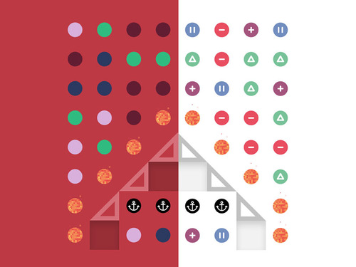
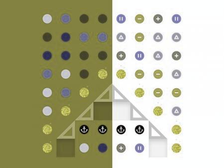
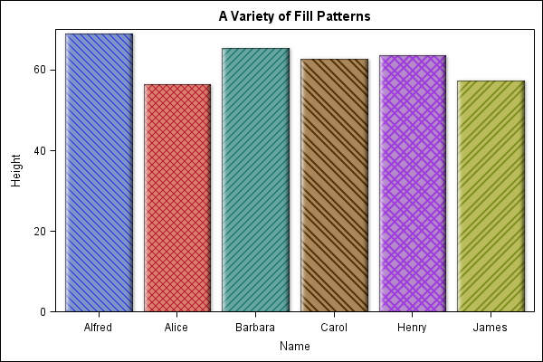
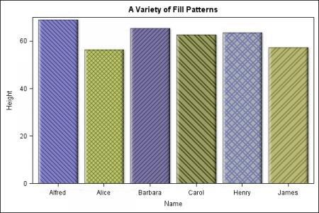
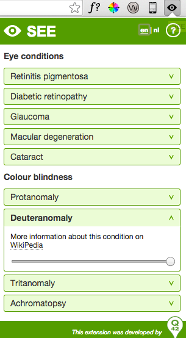
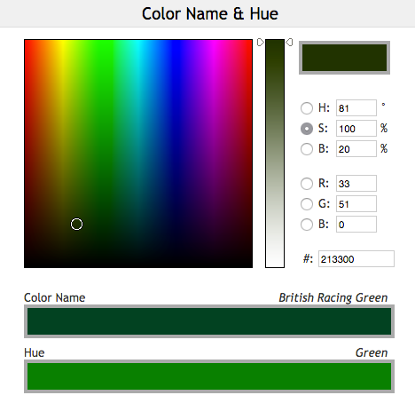
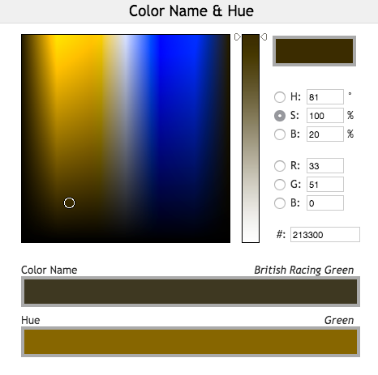

Designing for Colourblind Users
Presentation by Victoria Canning-Choi
How many people are affected by colour blindess?
1/12 men (8%) and 1/200 woman are colourblind. This makes up 4.5% of the world's population.
Chances are there is someone in this room who is colourblind.
What does this look like?

Normal |

Green-Type |

Red-Type |

Blue-Type |
source: http://wearecolorblind.com/
How can we choose colour blind friendly colour palettes?
Monochrome Palettes
A colour palette using only one colour in multiple shades.

How do monochrome palettes help?
Even if the user cannot see the exact shade you are intending, they are able to see the same difference in shade.
Example

Normal |

Green-Type |
Contrasting Colours
The contrast of colours is the difference between colours. Contrast can be accomplished through hue, value, and chroma.

Why is high contrast important?
If contrast is too low, what contrast that may appear to you may be invisible for somone who is colour blind.
It is important to use at least 2 of hue, value, and chroma when creating high contrast.
Example

Normal |

Red-Type |
How can we design better?
Don't solely associate colour with feedback
Using colour is a helpful visual cue, but it's important it's not the only visual cue to relay information to the user.
A colour blind user may have a hard time noticing quickly identifying this visual cue.
Solution: Redundancy Gain
"If a signal is presented more than once, it is more likely that it will be understood correctly. This can be done by presenting the signal in alternative physical forms (e.g. color and shape, voice and print, etc.), as redundancy does not imply repetition. A traffic light is a good example of redundancy, as color and position are redundant."
source: Christopher Wickens et al. An Introduction to Human Factors Engineering
Example

Normal |

Green-Type |
Don't rely on colour coded elements
Using colour omly colour to organize information. This is often seen in graphical representations of data or colour matching games.
Even if the colours are high contrast, this does not mean colours are quickly identafiable.
Solution: Use Patterns
Using patterns in addition to colour quickly helps idenify grouped information. This does not only help colour blind users recognize these pattern faster, but everyone else as well.
Example 1
|

Normal |

Red-Type |
Example 2
|

Normal |

Green-Type |
What tools can we use to test our designs?
See Chrome Extension
|  |
The SEE Chrome extension can show you what it's like to view a webpage with a certain vision impairments. This includes different eye conditions and colourblindness. source: SEE Chrome Extension |
Colour Name and Hue & Colbis
The Colour Name and Hue tool by Colbindor is a tools for colour blind users to help identify the colour's name and main hue.
The Colbis (Color BLIndness Simulator) by Colbindor is a simulator that converts images into the colour blind equivalent.
source: Colour Name and Hue and Colbis by Co0lbindor
Example
|

Normal |

Red-Type |